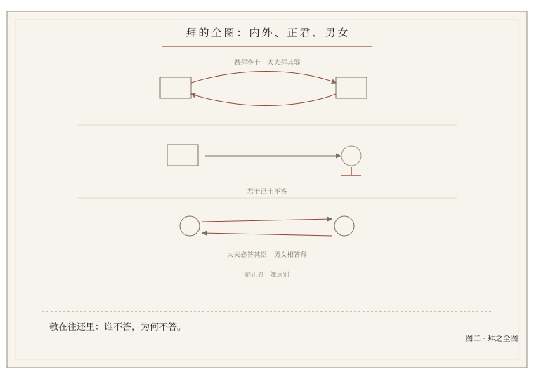

曲礼下 · 二·三十 · 第 153 课
大夫朝见他国国君，国君拜其辱；士见大夫，大夫拜其辱；同国初相见，主人拜其辱。君于己士不答拜，非其臣则答之。大夫于其臣虽贱必答之。男女相答拜。注「自外来而拜，拜见也；自内来而拜，拜辱也」。
说什么事：一节四段，把「拜」的来处与去处排了一遍。
落在哪一层：礼，兼及礼意。全节以「辱」字为枢。
为何编在此位：承上节「无不答拜」，此节细辨「谁拜谁之辱」，并收于「男女相答拜」一句，是曲礼下这一段的结。
【经】大夫見於國君，國君拜其辱。士見於大夫，大夫拜其辱。同國始相見，主人拜其辱。君於士，不答拜也，非其臣則答拜之。大夫於其臣，雖賤，必答拜之。男女相答拜也。
【注】自外來而拜，拜見也。自內來而拜，拜辱也。不臣人之臣。辟正君。嫌遠別不相答拜以明之。
【疏】此一节论君臣男女相答拜之法。「大夫见于国君」，谓大夫往见他国之君，君拜其辱者，以其初来，故拜其辱也。「士见于大夫」，大夫拜其辱者，同此。「同国始相见，主人拜其辱」者，同国之人，平生未相识，今始相见，主人当先拜其辱。「君于士，不答拜也」者，君是士之正君，士来见己，君不答其拜。「非其臣则答拜之」者，若他国之士，非己之臣，虽贱，君则答拜之。「大夫于其臣，虽贱，必答拜之」者，大夫为其臣贱，嫌不为答，既非正君，故答拜之。「男女相答拜也」者，男女虽别，然相答拜，以明不相远别也。一本作「不相答拜」，皇云：「后人加『不』字耳。」
拜其辱 注「自外来而拜，拜见也；自内来而拜，拜辱也」。辱者，以屈辱之辞言其来见。
同国始相见 同国之人初次相见。
不臣人之臣 注语。君不以他人之臣为己臣，故对客士答拜。
辟正君 注「辟音避」。大夫避正君之尊，故于己臣必答。
嫌远别不相答拜以明之 注语。男女之别易生远隔，以相答拜明其不隔。
一本作「不相答拜」 异文。皇侃以为「不」字为后人所加。
大夫朝见他国国君，国君拜谢他屈尊而来。士见大夫，大夫拜谢他屈尊而来。同国之人初次相见，主人拜谢他屈尊而来。国君对于自己的士，不答拜；不是自己的臣，就答拜。大夫对于自己的臣，虽贱，必答拜。男女相互答拜。
这一节是「拜」的全图：谁先拜、谁答、谁不答。规矩看似琐碎，实则有两条线：一为「内外」，外来为辱、内来为答；二为「正君与否」，正君不答己臣，非正君必答。末一句「男女相答拜」，把礼的往还推及最易生隔之处，收得极宽。
第一层 辱字之义 「辱」不是骂，是敬辞。说「辱」者，谓屈你之尊而来。故拜其辱，即谢其屈。
第二层 外来与内来 注分得最清：自外来而拜是「拜见」，自内来而拜是「拜辱」。同一个跪拜，来处不同，名义不同。
第三层 正君之尊 君于己士不答，是守正君之分。然「非其臣则答拜之」——对客卿之臣，君亦下拜。这一句话里，君的自尊让了一寸。
第四层 大夫避君 注「辟正君」：大夫不敢与君同尊，故于自己的臣也必答拜。下位者的自尊，反而更须给出。
第五层 男女相答拜 注「嫌远别不相答拜以明之」——男女之防易成远隔，礼以相答拜明其不相远。这是全节最重的一句：礼不是把男女隔开，是把他们放在同一套往还里。
与今日何干 同一件事，来处不同，说法就不同。谢人时，谢的是他为你付出的那份屈，而不是那份物。
| 左 | 右 |
|---|---|
| 国君拜其辱 | 谢其屈尊而来 |
| 大夫拜其辱 | 士见大夫，同此 |
| 主人拜其辱 | 同国始相见 |
| 自外来而拜，拜见也 | 来处不同，名义不同 |
| 自内来而拜，拜辱也 | 同此 |
| 君于士不答拜 | 正君之分 |
| 非其臣则答拜之 | 不臣人之臣 |
| 大夫于其臣必答 | 辟正君 |
| 男女相答拜 | 嫌远别，以拜明其不隔 |
画三层横向的拜—答对照，自上而下：第一层两枚方印形相对，左印下一道向右的短箭，右印下一道向右的短箭，两箭不交（示君与客士各拜）；第二层一方印形与一枚小圆相对，印下有箭、圆下无箭（示君于己士不答）；第三层两枚小圆相对，两箭相对而交（示大夫于臣必答、男女相答）。三层之间以极淡横线分隔。不画人、不写文字。赭色只用在第一层两支不交的箭头上。
